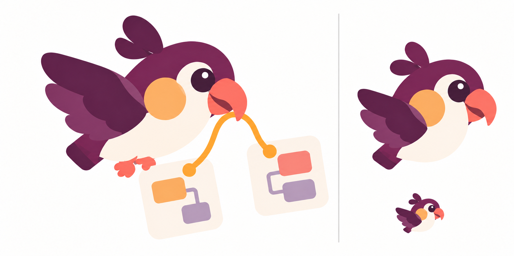
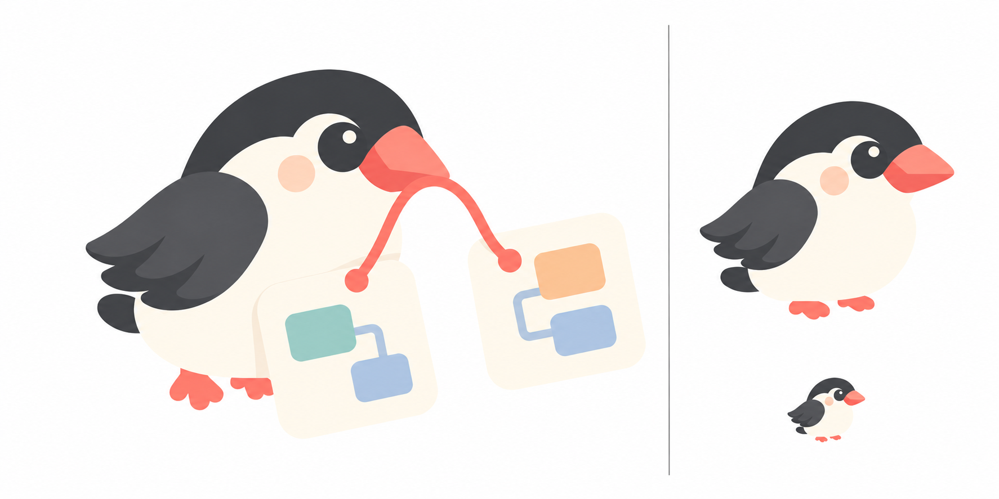
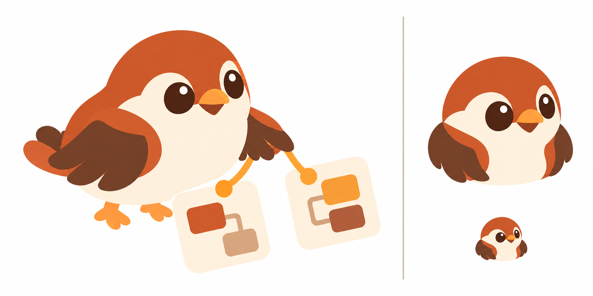
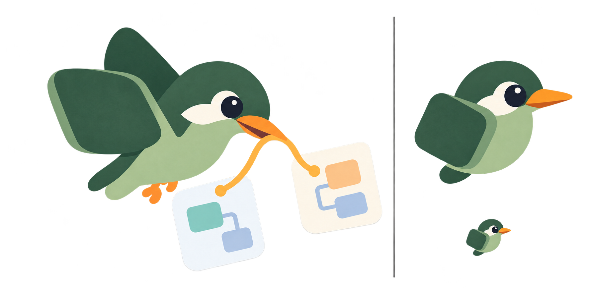
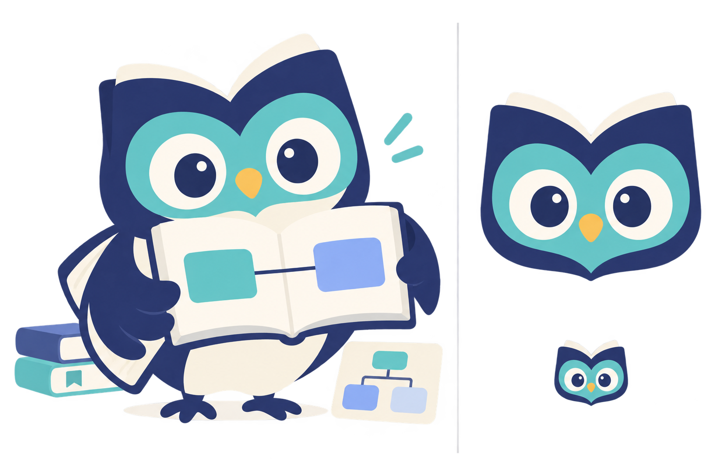

5羽の色と役割
操作はインコ、文字と構造は文鳥、分類はスズメ、つながりはツナギドリ、案内はホンフクロウ。以下の色はキャラクターの配色を参考にしたUI向けの値です。ダークスキンでは意味を引き継ぎ、暗い面で使える明るさに調整します。
役割の早見表
| マスコット | 意味付けの案 | 画面での使いどころ |
|---|---|---|
| 07C インコ | 操作する・選ぶ | 「確定」「作成」など、その画面で中心になる操作。 |
| 07D 文鳥 | 読む・構造を把握する | 本文、図形ラベル、ダイアログの見出し、通常のツールアイコン。 |
| 07A スズメ | 分類する・整理する | ディレクトリのフォルダーアイコン、分類タグ、カテゴリ見出し。 |
| 07 ツナギドリ | つなぐ・連携する | 関係を強調した接続線、接続点、連携機能のアイコン。 |
| 08 ホンフクロウ | 知る・考える | ヘルプ、使い方、チュートリアル、補足情報。 |
ここでの印象や役割はmatomezuのデザイン上の意味付けです。キャラクター画像自体をライト用・ダーク用に分けるものではありません。実際のスキンキー、RGB値、画面への配色見本は、それぞれのスキン資料に収録しています。ブック内の紙・図形・フォルダーへの応用は、スキンとは別のテーマで担当します。
インコ・文鳥・スズメ

COLOR & CHARACTER
プラム × アプリコット × コーラル
役割のキーワード：操作する・選ぶ
華やかさ、親しみ、会話のきっかけ。5羽の中で操作の入口を担う案です。
#7C2D60rgb(124, 45, 96)#F4EAF1rgb(244, 234, 241)#FFB45Frgb(255, 180, 95)Web上での役割・意味付けの例
- 「確定」「作成」など、その画面で中心になる操作。
- 選択中のページ、タブ、編集ツール、入力欄のフォーカス。
- オンボーディングや、ユーザーへの軽い呼びかけ。
matomezuの画面なら
現在の紫色の「確定」ボタンと選択枠を、鳥に寄せたプラムへ。選択面は淡いプラム、文字と枠は濃いプラムにします。
使い分けのポイント：紫の塗り面は主操作に絞ると、ほかの4色と並べても操作の優先順位が伝わります。

COLOR & CHARACTER
チャコール × アイボリー × コーラル
役割のキーワード：読む・構造を把握する
落ち着き、素直さ、読みやすさ。カラフルな要素を受け止める、画面全体の土台となる案です。
#45474Brgb(69, 71, 75)#F2F2F3rgb(242, 242, 243)#FF786Brgb(255, 120, 107)Web上での役割・意味付けの例
- 本文、図形ラベル、ダイアログの見出し、通常のツールアイコン。
- 未選択のファイル、階層線、標準の接続線。
- 設定やヘルプの補足文など、主張を抑えて読ませる情報。
matomezuの画面なら
「線の編集」の見出しと各項目、ツリーの通常文字に使用。現在の薄いグレーの補助線は残し、文字には十分な濃さを持たせます。
使い分けのポイント：くちばしのコーラルは装飾の小さな差し色に。削除・エラーは専用の赤と文言で区別します。

COLOR & CHARACTER
テラコッタ × ブラウン × アンバー
役割のキーワード：分類する・整理する
温かさ、身近さ、手を動かして整理する楽しさ。フォルダーや情報のまとまりを表す案です。
#A84B28rgb(168, 75, 40)#FFF1E5rgb(255, 241, 229)#F5A623rgb(245, 166, 35)Web上での役割・意味付けの例
- ディレクトリのフォルダーアイコン、分類タグ、カテゴリ見出し。
- グループ枠のタイトル帯、情報をまとめる小さなラベル。
- 「整理のヒント」など、作業を後押しする案内。
matomezuの画面なら
左のフォルダーにアンバー、カテゴリ名にはテラコッタを使用。「社内ネットワーク」のようなグループは淡い暖色の見出し帯でまとめます。
使い分けのポイント：通常の分類色として使うため、警告と同じ見た目にしない設計に。警告にはアイコンと「注意」などの明示的なラベルを添えます。
07 ツナギドリと08 ホンフクロウ

COLOR & CHARACTER
フォレストグリーン × セージ × オレンジ
役割のキーワード：つなぐ・連携する
穏やかさ、協力、情報どうしのつながり。ほかの鳥と色を分けながら、接続というサービスの特徴を担う案です。
#356650rgb(53, 102, 80)#EEF4EArgb(238, 244, 234)#A9C596rgb(169, 197, 150)Web上での役割・意味付けの例
- 関係を強調した接続線、接続点、連携機能のアイコン。
- 外部サービスやデータとの接続状態。
- 保存完了・接続済みなど、成功状態の補助表示。
matomezuの画面なら
図の「MCP」など、注目させたい接続線と接続点を緑に。線の編集ダイアログでは、線のプレビューに使用できます。
使い分けのポイント：すべての線を緑にすると強弱が消えるため、通常線は中立色に。緑だけで「接続済み」と判断させず、状態名やチェック印も添えます。

COLOR & CHARACTER
インディゴ × ターコイズ × クリーム
役割のキーワード：知る・考える
知識、集中、落ち着いた案内役。図や情報を読み解く手助けをする案です。
#303D73rgb(48, 61, 115)#EEF1FArgb(238, 241, 250)#62BFC5rgb(98, 191, 197)Web上での役割・意味付けの例
- ヘルプ、使い方、チュートリアル、補足情報。
- AIの提案、改善のヒント、知識パネルの見出し。
- 情報カードや参照リンクのアイコンと枠。
matomezuの画面なら
画面の「改善のひらめき」やAI提案カードに使用。見出しは紺、カード面は淡いインディゴ、ターコイズは小さな図柄に使います。
使い分けのポイント：紫の「操作・選択」と紺の「案内・情報」を役割で分けると、似た寒色でも使い分けが明確になります。